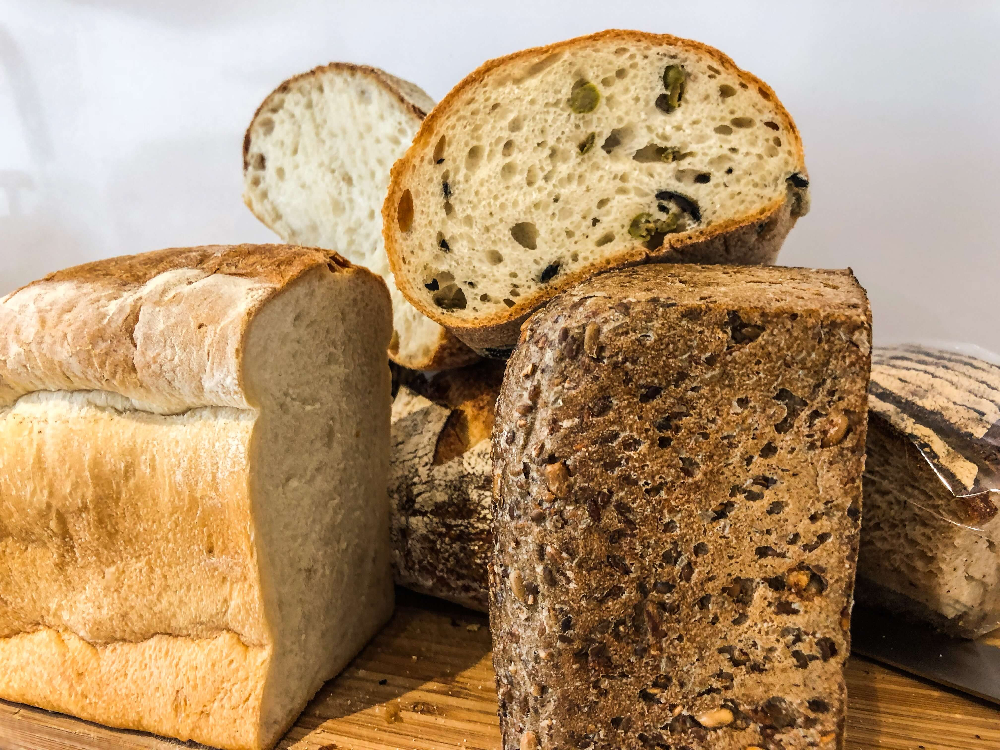
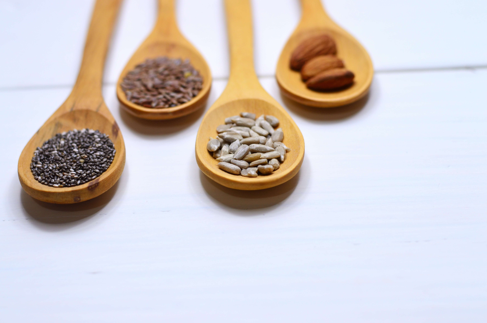

לחם בריאות - האומנם?
רבות כבר דובר על חשיבותם של דגנים מלאים לבריאותנו ונזקיו של קמח החיטה הלבן. לחמים רבים מתגאים בשמות כמו "לחם בריאות", "לחם שיפון", "לחם דגנים" וכו'. אך בדיקה מהירה ברשימת המרכיבים מוכיחה שלא כך המצב.
היצרנים מחוייבים לכתוב את כל המרכיבים במוצר ע"פ הכמות שלהם במוצר. כלומר, המרכיב שכתוב ראשון הוא המרכיב שישנו בכמות הגדולה ביותר במוצר. שימו לב איזה מהקמחים מופיע ראשון ברשימה ושימו לב כמה סוגי קמחים נוספים מופיעים באותה רשימה.
הקמח- עניין של איכות וכמות:
לא פעם, לחם יוגדר על ידי היצרן כ"לחם שיפון" לדוגמא, כשבפועל רק 5-10% מסך כל הקמחים שבתוכו הם באמת קמח שיפון והיתר הם קמחים מסוגים שונים, לרוב קמח חיטה לבן או צבוע.
לכן, אין להסתפק ב"כותרת" שניתנת ללחם ויש לבדוק ברשימת המרכיבים מהם הקמחים שמרכיבים את הלחם (בחלק מהלחמים היחס בין הקמחים יהיה כתוב באחוזים מסך כל הקמחים)
בתווית המזון מצויינת רשימת המרכיבים, היצרנים מחוייבים לכתוב את כל המרכיבים במוצר ע"פ הכמות שלהם במוצר. כלומר, המרכיב שכתוב ראשון הוא המרכיב שישנו בכמות הגדולה ביותר במוצר.
שימו לב איזה מהקמחים מופיע ראשון ברשימה, שימו לב כמה סוגי קמחים נוספים מופיעים באותה רשימה.

יצרנים רבים כותבים ברשימת המרכיבים "קמח חיטה כהה", זהו קמח חיטה לבן וצבוע באיכות בריאותית ירודה.
לא ניתן לומר מהו הקמח הטוב ביותר עבורכם, לחמים שעשויים מקמחים כמו שיפון, כוסמין מלא ושיבולת שועל נחשבים איכותיים יותר ועשירים יותר בסיבים תזונתיים, מינרלים וויטמינים, אך לפעמים לא יתאימו לכל אחד, ולכן על כל אדם להתנסות ולבדוק מה מבין הקמחים מתאים לו ולא יוצר בגופו תופעות כמו גזים ונפיחויות.
מומלץ לשלב בתזונה כמה סוגי קמחים מלאים באותו הלחם או בכמה לחמים שונים.
אגוזים וזרעים:
לחמים רבים "מועשרים" במיני זרעים ואגוזים על מנת לשפר את הטעם ולתת לנו תחושה של לחם "בריאות" או לחם "כפרי", אולם, אגוזים וזרעים בריאים רק כשהם טבעיים ולא קלויים. כאשר הם נאפים בתוך לחם או מעליו הם עוברים תהליך של קליה, בתהליך זה נפגעים השמנים העדינים שאגוזים וזרעים מכילים ועוברים תהליך חמצון בדומה לשמן מטוגן.
סוכר וחומרים נוספים:
אין שום סיבה לאכול סוכר בלחם שלנו, הימנעו מלחמים שמכילים סוכר השתדלו להימנע מלחמים המכילים חומרים משמרים, חומרי צבע וטעם וכו' ובאופן כללי, מעט מרכיבים ברשימת הרכיבים מעידה על מוצר איכותי.
**שימו לב, יש לצרוך לחם בצורה מתונה כחלק מתפריט מאוזן ולא לבסס ארוחות שלמות על לחם בלבד.